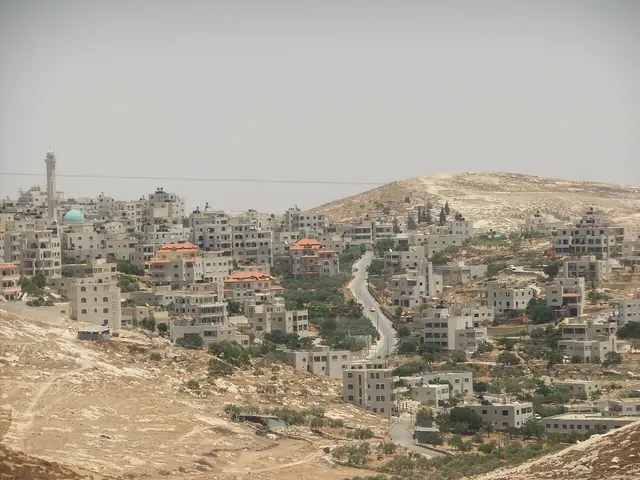
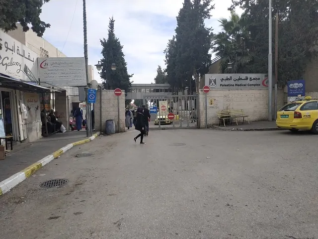
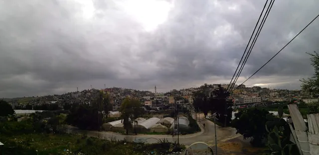

The Days
Each edition is one day in Palestine, told in order from midnight to midnight. Below them, every day of October 2026 as the sky over Jerusalem ran it: each row is a day, left to right from midnight, with the sun up where the row is light.
Editions
- Wednesday14 OctSettlers set fire to a mosque in Mukhmas after midnight, governorate saysThey also burned a car and an olive tree, and AFP footage showed Hebrew graffiti on its walls. It is one of 23 arson attacks or attempts on West Bank mosques counted since January 2023 by the Colonization and Wall Resistance Commission.

- Tuesday13 OctIsraeli forces surround Ramallah’s main hospital and raid rights groups’ officesA teenager and a man were shot with live fire, one of them seriously, and two journalists were injured during the hours-long raid, the Health Ministry and local sources said.

- Monday12 OctHigh Court asks Israel for a timetable to return 33,000 displaced to West Bank campsHours later, Defense Minister Israel Katz called Israel’s presence in the emptied Jenin, Tulkarm and Nur Shams camps ‘permanent’ and said the court should not intervene.

October 2026 in Palestine’s sky
Computed for Jerusalem, in Palestine time. Beads are the slots of each edition, placed on their day at the minute they were filed. When the clocks change, the whole row shifts by an hour.